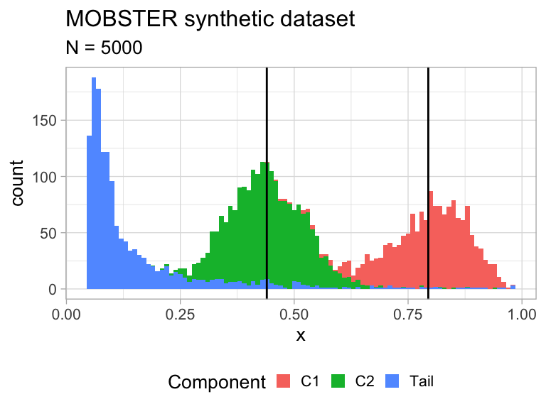
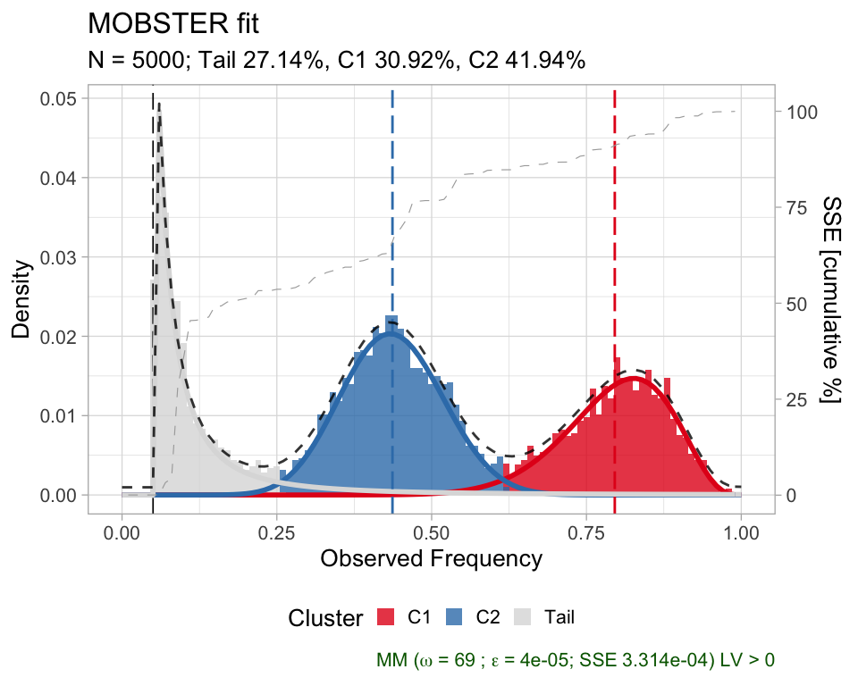
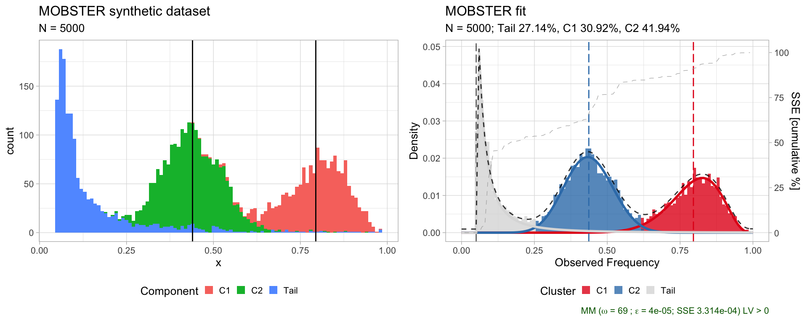

introduction.RmdInput data must be a data.frame (or, tibble) with a columun named VAF whose values are numerical \(0<x<1\), without NA entries. Extra columns will be retained, but not modified.
# Exanple dataset
mobster::PD4120a_breast_sample$best$data %>% as_tibble
#> # A tibble: 4,643 x 15
#> region gene chr from to ref alt vartype VAF.tumour VAF.normal
#> <chr> <chr> <chr> <int> <int> <chr> <chr> <chr> <dbl> <dbl>
#> 1 inter… LOC1… chr3 74574 74574 G A SNP 0.371 0
#> 2 inter… LOC1… chr3 80489 80489 C T SNP 0.276 0
#> 3 inter… LOC1… chr3 139091 139091 G C SNP 0.049 0
#> 4 inter… LOC1… chr3 150557 150557 G C SNP 0.077 0
#> 5 inter… LOC1… chr3 190860 190860 T A SNP 0.033 0
#> 6 inter… LOC1… chr3 198896 198896 C G SNP 0.347 0
#> 7 inter… LOC1… chr3 234298 234298 C T SNP 0.233 0
#> 8 intro… CHL1 chr3 271958 271958 C G SNP 0.282 0
#> 9 intro… CHL1 chr3 312028 312028 C T SNP 0.083 0
#> 10 intro… CHL1 chr3 321624 321624 C T SNP 0.162 0
#> # … with 4,633 more rows, and 5 more variables: depth.tumour <dbl>,
#> # depth.normal <chr>, NV <dbl>, VAF <dbl>, cluster <chr>PD4120a_breast_sample is an example dataset available within the package. Other datasets can be loaded as data("xxx", package = 'mobster') where xxx is the dataset name.
Generating radom datasets. You can sample a random dataset with the random_dataset function, setting:
n) and Beta components (k, subclones) to generate;The variance of the Betas is sampled as \(u/B \~ U[0,1]\), where \(B\) is set via parameter Beta_variance_scaling. Roughly, values of Beta_variance_scaling on the order of 1000 give low variance (shark peaked distributions) representative of high-coverage sequencing; lower values mimick data observed at low-sequencing coverage.
dataset = random_dataset(
seed = 123,
Beta_variance_scaling = 100 # variance ~ U[0, 1]/Beta_variance_scaling
)A list with 3 components is returned with the actual data, sampled parameters of the generative model, and a plot of the data.
In mobster we provide the implementation of the model’s density function (ddbpmm, density Dirichlet Beta Pareto mixture model) , and a sampler (rdbpmm) which is used internally by random_dataset.
# Data, in the MOBSTER input format with a "VAF" column.
print(dataset$data)
#> # A tibble: 5,000 x 2
#> VAF cluster
#> <dbl> <chr>
#> 1 0.848 C1
#> 2 0.774 C1
#> 3 0.829 C1
#> 4 0.641 C1
#> 5 0.916 C1
#> 6 0.795 C1
#> 7 0.861 C1
#> 8 0.815 C1
#> 9 0.787 C1
#> 10 0.799 C1
#> # … with 4,990 more rows
# The generated model contains the parameters of the Beta components (a and b),
# the shape and scale of the tail, and the mixing proportion.
print(dataset$model)
#> $a
#> C1 C2
#> 16.40514 16.78235
#>
#> $b
#> C1 C2
#> 4.247342 21.373956
#>
#> $shape
#> [1] 1
#>
#> $scale
#> [1] 0.05
#>
#> $pi
#> Tail C1 C2
#> 0.2919682 0.3054546 0.4025772
# A plot object (ggplot) is available where each data-point is coloured by
# its generative mixture component. The vertical lines annontate the means of
# the sampled Beta distributions.
print(dataset$plot)
Function mobster_fit fits a MOBSTER model.
The function implements a model selection routine that by default scores models by their reICL (reduced Integrative Classification Likelihood) score, a variant to the popular BIC that uses the entropy of the latent variables of the mixture reICL is discussed in the main MOBSTER paper.
This function has several parameters to customize the fitting procedure, and a set of special pre-parametrised runs that can be activated with parameter auto_setup. Here we use auto_setup = "FAST", an automatic setup that provides usually faster runs; default parameters test more extensive types of fits.
fit = mobster_fit(
dataset$data,
auto_setup = "FAST"
)
#> [ MOBSTER fit ]
#> ✔ Loaded input data, n = 5000.
#> ❯ n = 5000. Mixture with k = 1,2 Beta(s). Pareto tail: TRUE and FALSE. Output clusters with π > 0.02 and n > 10.
#> ! mobster automatic setup FAST for the analysis.
#> ❯ Scoring (without parallel) 2 x 2 x 2 = 8 models by reICL.
#> ℹ MOBSTER fits completed in 13.1s.
#> ── [ MOBSTER ] My MOBSTER model n = 5000 with k = 2 Beta(s) and a tail ──────────────────────────────────────────────────
#> ● Clusters: π = 42% [C2], 31% [C1] and 27% [Tail], with π > 0.
#> ● Tail [n = 1262, 27%] with alpha = 1.4.
#> ● Beta C1 [n = 1549, 31%] with mean = 0.8.
#> ● Beta C2 [n = 2189, 42%] with mean = 0.44.
#> ℹ Score(s): NLL = -1433.06; ICL = -2063.32 (-2572.53), H = 726.13 (216.93). Fit converged by MM in 69 steps.A call of mobster_fit will return a list with:
fit$best;fit$runs, a list with the ranked fits; the object available in best matches the head of this list,;fit$fits.table, a table that summarises the scores for each one of the runs.Each fit object (best or any object stored in runs) is from the S3 class dbpmm.
# Print the best model, as well as the first 3 models in the runs list
print(fit$best)
#> ── [ MOBSTER ] My MOBSTER model n = 5000 with k = 2 Beta(s) and a tail ──────────────────────────────────────────────────
#> ● Clusters: π = 42% [C2], 31% [C1] and 27% [Tail], with π > 0.
#> ● Tail [n = 1262, 27%] with alpha = 1.4.
#> ● Beta C1 [n = 1549, 31%] with mean = 0.8.
#> ● Beta C2 [n = 2189, 42%] with mean = 0.44.
#> ℹ Score(s): NLL = -1433.06; ICL = -2063.32 (-2572.53), H = 726.13 (216.93). Fit converged by MM in 69 steps.
# Same as best
print(fit$runs[[1]])
#> ── [ MOBSTER ] My MOBSTER model n = 5000 with k = 2 Beta(s) and a tail ──────────────────────────────────────────────────
#> ● Clusters: π = 42% [C2], 31% [C1] and 27% [Tail], with π > 0.
#> ● Tail [n = 1262, 27%] with alpha = 1.4.
#> ● Beta C1 [n = 1549, 31%] with mean = 0.8.
#> ● Beta C2 [n = 2189, 42%] with mean = 0.44.
#> ℹ Score(s): NLL = -1433.06; ICL = -2063.32 (-2572.53), H = 726.13 (216.93). Fit converged by MM in 69 steps.
# Second best fit
print(fit$runs[[2]])
#> ── [ MOBSTER ] My MOBSTER model n = 5000 with k = 1 Beta(s) and a tail ──────────────────────────────────────────────────
#> ● Clusters: π = 80% [C1] and 20% [Tail], with π > 0.
#> ● Tail [n = 1016, 20%] with alpha = 1.9.
#> ● Beta C1 [n = 3984, 80%] with mean = 0.56.
#> ℹ Score(s): NLL = -880.03; ICL = -1045.85 (-1708.95), H = 663.11 (0). Fit converged by MM in 34 steps.
# Third best fit
print(fit$runs[[3]])
#> ── [ MOBSTER ] My MOBSTER model n = 5000 with k = 1 Beta(s) without tail ────────────────────────────────────────────────
#> ● Clusters: π = 100% [C1], with π > 0.
#> ✖ No tail fit.
#>
#> ● Beta C1 [n = 5000, 100%] with mean = 0.47.
#> ℹ Score(s): NLL = -138.11; ICL = -250.67 (-250.67), H = 0 (0). Fit interrupted by MM in 100 steps.MOBSTER clusters can be plot as an histogram overlaid to the model density. By default MOBSTER names Beta clusters according to the decreasing order of their mean; so C1 is always the label of the cluster with highest mean, etc. If the data are correct, this should represent the pool of clonal mutations in the analysed biopsy.

The basic plot shows, mirrored on the y-axis, the percentage of cumulative sum-of-squared-error (SSE) of the fit, and the caption annotates information about the run. A comparative plot between fits can be assembled using cowplot.

Hard clustering assignments can be accessed with function Clusters, and subset imposing a minimum cutoff to the reponsibilities of the mutations. The output tibble is a copy of the input, with the new cluster column (unassigned mutation with NA), plus a set of columns for the latent variables.
# Assign mutations with at least 80% of probability mass to their maximum responsibility
clusters = Clusters(
fit$best,
cutoff_assignment = .8
)
print(clusters)
#> # A tibble: 5,000 x 5
#> VAF cluster Tail C1 C2
#> <dbl> <chr> <dbl> <dbl> <dbl>
#> 1 0.848 C1 0.00638 0.994 1.89e- 7
#> 2 0.774 C1 0.00897 0.991 1.38e- 4
#> 3 0.829 C1 0.00651 0.993 1.41e- 6
#> 4 0.641 <NA> 0.0444 0.723 2.33e- 1
#> 5 0.916 C1 0.0114 0.989 1.02e-11
#> 6 0.795 C1 0.00764 0.992 2.80e- 5
#> 7 0.861 C1 0.00652 0.993 4.17e- 8
#> 8 0.815 C1 0.00682 0.993 4.84e- 6
#> 9 0.787 C1 0.00806 0.992 5.11e- 5
#> 10 0.799 C1 0.00743 0.993 1.98e- 5
#> # … with 4,990 more rowsSeveral functions can be used to plot the data.s